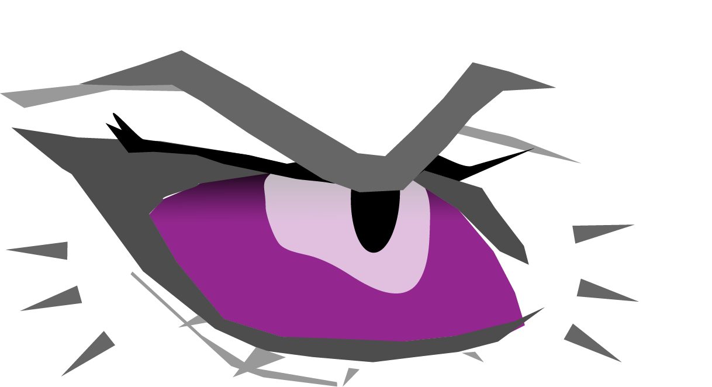
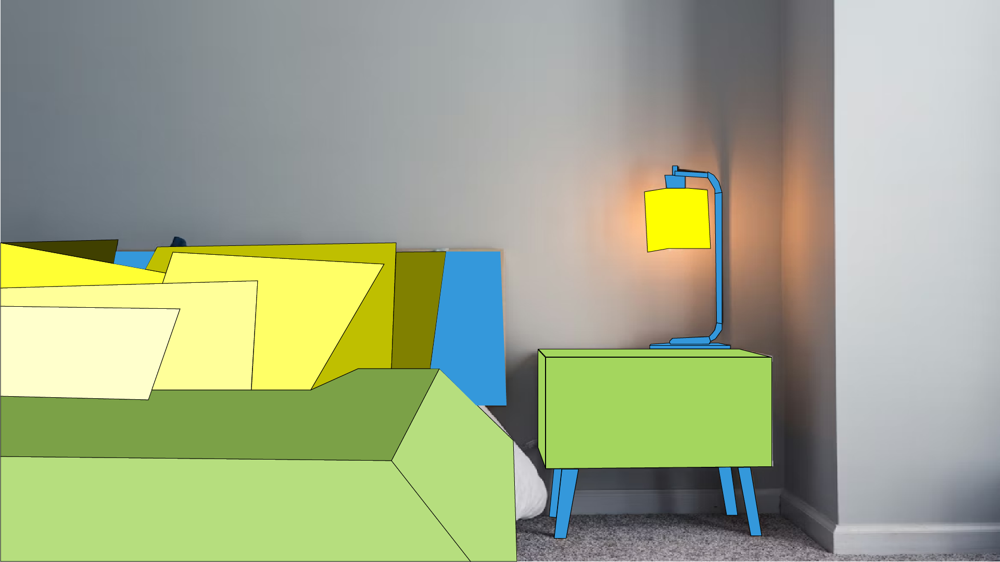
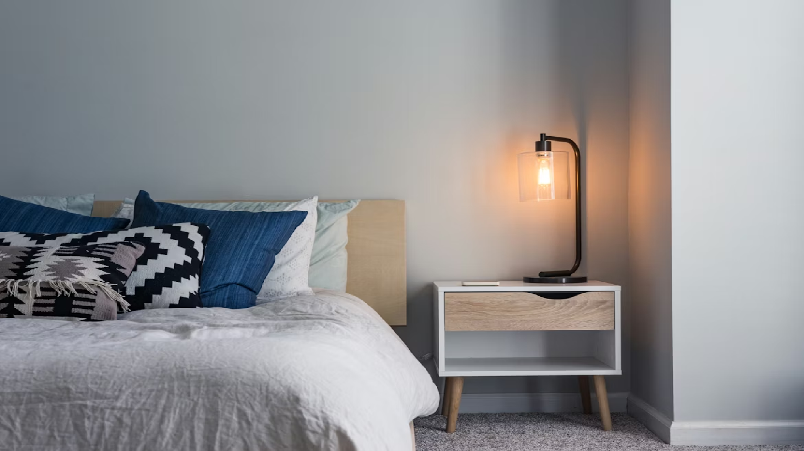

Homework #5



I chose this picture of the bedroom because it has clean layout, and soft bedside lamp glow captured my eye. I transformed the scene into bold geometric shapes using vector tools in Illustrator, layering foreground elements like the bed and nightstand over a neutral not transformed background for depth while preserving the cozy atmosphere. I applied a color triad color scheme with their shades to create an illustration that matches the simplicity of the original photo.